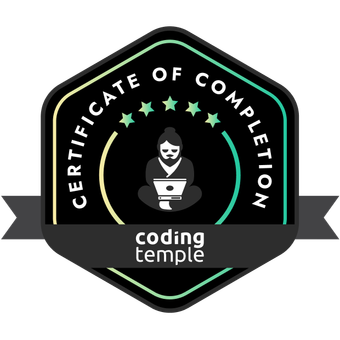

I grew up in the Midwest in a small town in Illinois. After high school, I went into Nursing, and was in that career for 23 years. After surviving an F5 tornado, I moved to Arizona and lived there for 15 years. I started working at Walmart January of 2015 and left in June 2023. I transferred to the U.P. to help my sister take care of our mother. We live out in the country and close to Lake Michigan. I enjoy developing computer applications and learning new technology to keep up with the fast changing field. I love crafts of all kinds. I raise African Grey Parrots.
My journey in software engineering began with a deep curiosity for problem-solving and a love for building things that make an impact. I thrive in dynamic and collaborative environments where I can contribute my skills and continuously learn from fellow professionals.
Throughout my career, I have honed my expertise in front-end technologies such as HTML, CSS, and JavaScript, and have hands-on experience with popular frameworks like React, Flask, Tailwindcss and MaterialUI. On the back end, I have worked with languages like Python, TypeScript, and Node.js, and have proficiency in databases such as Postgres.
What truly excites me about software engineering is the opportunity to create innovative solutions and turn ideas into reality. I am dedicated to writing clean, efficient code and following industry best practices to deliver high-quality software products. I am also passionate about staying up-to-date with the latest industry trends and technologies to continually expand my skill set.
Aside from technical skills, I am an effective communicator and thrive in collaborative team environments. I enjoy working closely with stakeholders to understand project requirements and translate them into efficient and user-friendly solutions.
I'm open to new opportunities and challenges where I can apply my skills and contribute to meaningful projects. If you're interested in discussing potential collaborations or simply want to connect, feel free to reach out. Let's connect and explore how we can make a positive impact together.
You may see my certifications here by clicking on the image:
